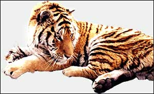

North east region (near Siberia)
The north east of China, near the Russian border, has very long and harsh winters. Temperatures can plummet to -50°C. The area is covered in dense forest. These forests are home to reindeer, moose, musk deer, bears and sables. They are also home to Siberian and Manchurian tigers. However, due to hunting and deforestation, these tigers are in grave danger of becoming extinct.

|